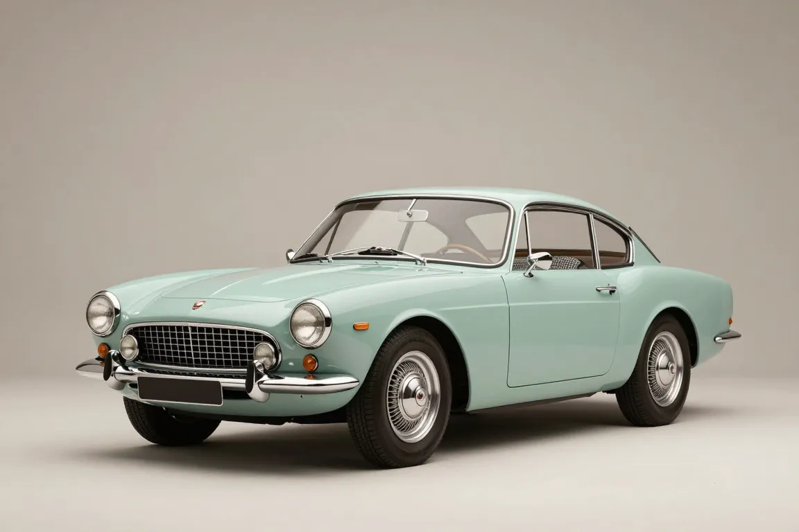

A new car with the shape of an old one: a round Beetle, a small Mini or a long-bonnet Mustang. It has chrome trim, round lamps and a painted dashboard.

Core thesis
A new car can borrow the face of a loved old one. It must keep the key shapes and add the comfort and safety of today.
Design principles
Copy the key shapes of the old car: the roof, the round lamps and the grille, at 90 to 110 percent of the old size.
Make the body bigger than the old one by 5 to 15 percent, to meet crash rules.
Fit round lamps, a chrome ring on each, and a grille in the old pattern.
Paint a panel of the dashboard in the body colour, with chrome rings on the dials.
Add chrome trim as a bright accent on the door handles, the mirrors and the grille.
Offer two-tone paint, a stripe, a roof in a second colour and a retro badge.
Hide the modern parts: airbags, screens and sensors, behind the retro surface.
Anti-patterns
A new shape with no link to the old car
A cold, black, plain dashboard
Large, angular lamps
A copy that is exact in all sizes, with no modern safety